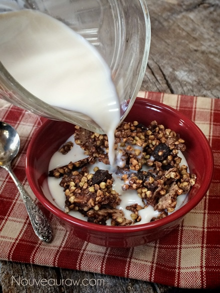
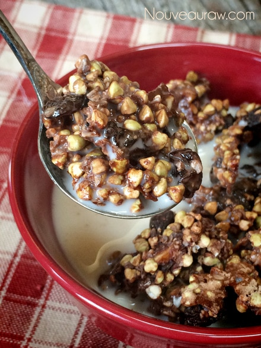
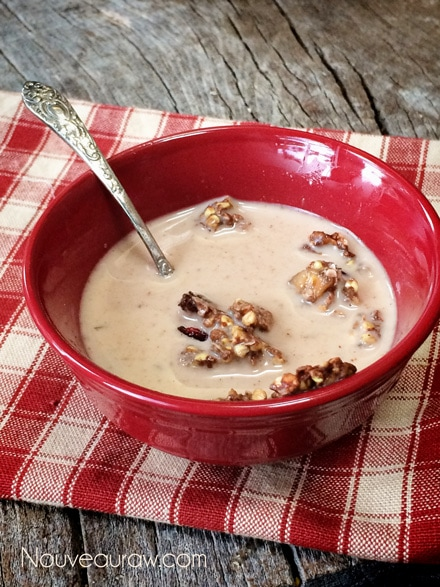
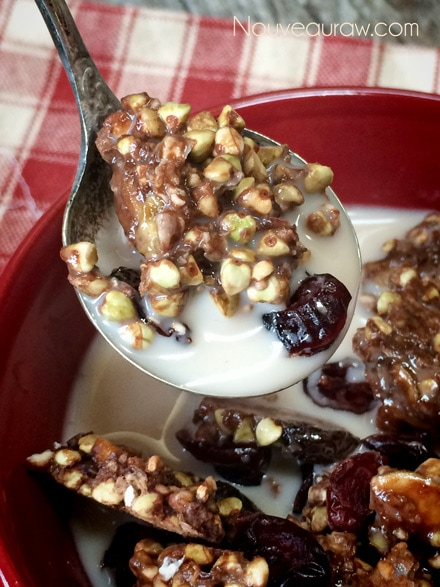
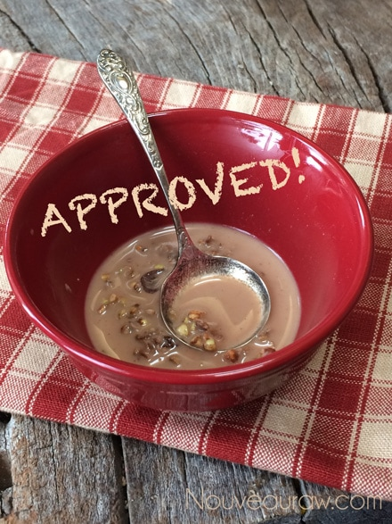

Buckwheat Cacao Pops

~ raw, vegan, gluten-free, nut-free ~
Do you ever miss sneaking in a bowl of your childhood favorite, sugared, cereal?! I know I do from time to time. As I walk down the cereal aisle at the grocery, I often stop at various cereals that take me back in time. “Time Travel! Isle 2!”
I am not tempted to buy those high sugared cereals, but I won’t deny that they sound good! Well, for those of you who want to revisit a childhood memory with me, make these Raw Buckwheat Cacao Pops, dish up a big bowl with your favorite nut milk, snuggle up on the couch and turn on the cartoon channel!
Ingredients:
Yields 3 cups
- 1 cup raw buckwheat or sprouted quinoa
- 1/4 cup raisins
- 1/4 cup dried banana chips
- 2 Tbsp raw cacao powder
- 3-4 Tbsp maple syrup
- 1/2 tsp ground Ceylon cinnamon
- 1/8 tsp Himalayan pink salt
Preparation:
- Soak the buckwheat for 30+ minutes then, rinse, rinse, and rinse some more. They create a gelatinous liquid that needs to be washed away. Buckwheat expands when soaked so don’t be alarmed.
- In a mixing bowl, combine the buckwheat, raisins, banana chips, cacao powder, maple syrup, cinnamon, and salt, mix well. Taste test and adjust if needed.
- Spread the mixture onto a teflex sheet and dehydrate at 145 degrees (F) for 1 hour, then reduce to 115 degrees (F) for 4 – 8 hours.
- Partway through the dry time, flip the non-sheet over onto the mesh sheet that comes with the dehydrator and peel back the non-stick sheet.
- Dry times will always vary based on climate, humidity, and/or on how full the machine is.
- Once the mixture is crisp and crunchy, I simply broke it up into small pieces and placed them in a bowl
- Dish yourself up a bowl, add a little nut milk.
The Institute of Culinary Ingredients™
- To learn more about maple syrup by clicking (here).
- What is raw cacao powder?
- Why do I specify Ceylon cinnamon? Click (here) to learn why.
- What is Himalayan pink salt and does it really matter? Click (here) to read more about it.
Culinary Explanations:
- Why do I start the dehydrator at 145 degrees (F)? Click (here) to learn the reason behind this.
- When working with fresh ingredients, it is important to taste test as you build a recipe. Learn why (here).
- Don’t own a dehydrator? Learn how to use your oven (here). I do however truly believe that it is a worthwhile investment. Click (here) to learn what I use.
FDA (Food Determining Association) conducted a test at Nouveau Raw Kitchens, The Soggy Cereal Test. The subject: Crunchy Peanut Butter and Buckwheat Cereal Squares. Object: to see how long this raw cereal could stand up to almond milk before getting soggy. No animals were harmed in this test. Results posted below.
Step 1 ~ Set timer for 10 minutes.

Step 2 ~ Add nut milk.

Step 3 ~ 10 minutes in… this bite still had good crunch into it.

Step 4 ~ 20 minutes into the test… pieces are breaking up but the buckwheat
remains crunchy.

I know this is a test, but I am really enjoying this process!

Step 5 ~ 30 minutes into the test and the last bite was a little soft but not soggy.

This concludes today’s test. It’s a success!
© AmieSue.com